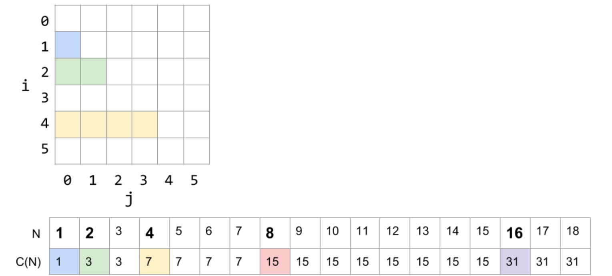
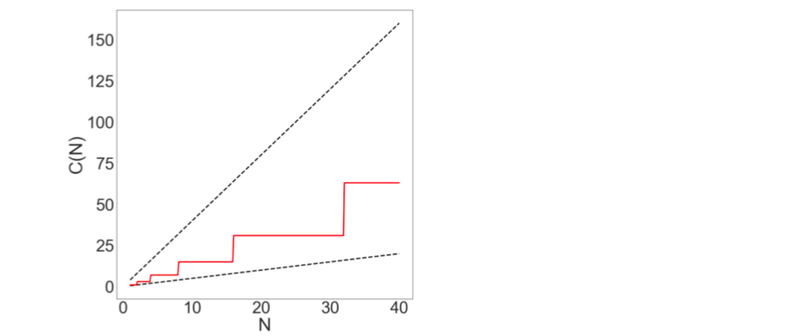
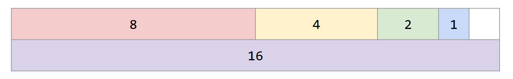

Asymptotic
Asymptotics¶
An Introduction to Asymptotic Analysis¶
We can consider the process of writing efficient programs from two different perspectives:
- Programming Cost
- develop
- read or modify
- maintain
- Execution Cost
- Time complexity
- Space complexity
Runtime Characterization¶
- measure execution time in seconds
- Use Unix's built in time command.
-
Use the Princeton Standard library which has a
stopwatchclass. -
count the total number of operations
-
symbolic count
Asymptotic Behavior¶
- Only consider the worst case.
- Pick a representative operation (aka: cost model)
- Ignore lower order terms
- Ignore multiplicative constants.
Order of Growth¶
- Big Theta (Θ)
- Big O (Ο)
- Big Omega (Ω)
Nested For Loops¶
public static void printParty(int N) {
for (int i = 1; i <= N; i = i * 2) {
for (int j = 0; j < i; j += 1) {
System.out.println("hello");
int ZUG = 1 + 1;
}
}
}
Finding the Bound Visually¶
 graph the trajectory of 0.5 N, 4N and \(C(N)\) itself 
Geometric Visualization: 
Finding the Bound Mathematically¶
We can obtain the same result by solving our equation from above with the power of mathematics:
\[
C(N) = 1 + 2 + 4 + ... + N = 2N - 1=Θ(N)
\]
Amortized Analysis¶
Any single operation may take longer, but if we use it over many operations, we're guaranteed to have a better average performance
public void addLast(int x) {
if (size == items.length) {
resize(size + RFACTOR);
}
items[size] = x;
size += 1;
}
public void addLast(int x) {
if (size == items.length) {
resize(size * RFACTOR);
}
items[size] = x;
size += 1;
}
Recursive Analysis¶
$$ \begin{align} C(N) = C(N - 1) + C(N - 2)\ C(0) = 0\ C(1) = 0 \end{align} $$Binary Search¶
depends on the times of calling functions
MergeSort¶
\(C(N) = 2*C(N/2) + N\)
Summary¶
There are no magic shortcuts for analyzing code runtime.